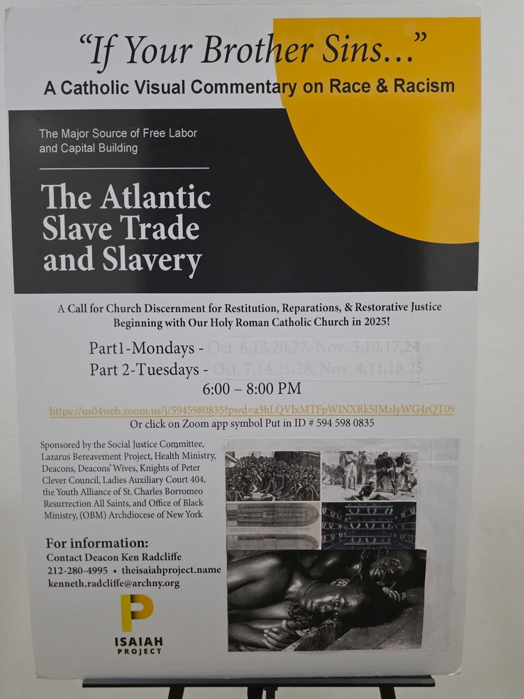

Presentation
“If Your Brother Sins…”
A Catholic visual commentary on race and racism.
“If Your Brother Sins…” is a sight-and-sound presentation by Deacon Ken Radcliffe on the Atlantic slave trade and slavery as the major source of free labor and capital building, and a call for Church discernment on restitution, reparations and restorative justice, beginning with the Roman Catholic Church.
The printed report was taken to Rome by Timothy Cardinal Dolan, who presented it to Cardinal Michael Czerny, S.J., Prefect of the Dicastery for Promoting Integral Human Development, who referred it to the Regional Coordinator for North America for review and study.
It is essential viewing for Catholic parishes, ministries and organizations working for social justice and struggling to understand the disease of racism.
Viewings on Zoom are available by appointment when five or more people are interested.
